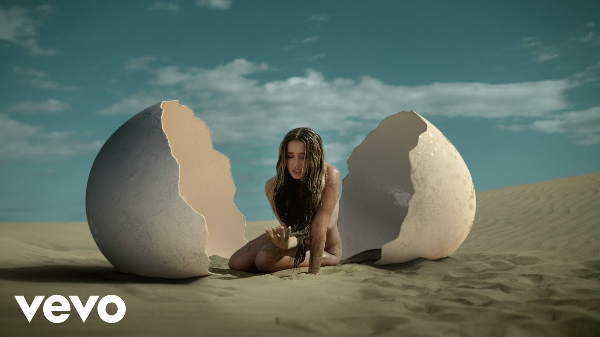

Las playas de arena negra, las dunas junto al mar y los campos de lava son algunas de las imágenes más buscadas por las producciones que vienen a rodar en Canarias. También son de los terrenos más exigentes para el material. La arena se cuela en todo, el malpaís no perdona las ruedas y el viento puede tumbar un plano. Así se prepara el grip para estas localizaciones.
Los cuatro retos del terreno
- Arena: las ruedas se hunden, los trípodes se mueven y el polvo fino entra en mecanismos y rodamientos.
- Roca volcánica: suelo irregular, cortante y sin puntos planos para nivelar.
- Viento: habitual en costa y cumbre, afecta a grúas, ladderpods, banderas y estabilización.
- Salitre y humedad: corroen metales y conectores si el material no se limpia al terminar.
Rodar en la playa
En arena húmeda y compacta se puede trabajar casi como en suelo firme; en arena seca, no. Para travellings, el dolly necesita vías sobre una base de tablones que reparta el peso y permita nivelar. Para seguir a actores por la orilla, un gimbal con Easyrig es más ágil que cualquier vía.
La marea manda: hay que conocer sus horarios, porque el espacio útil cambia durante la jornada y el material no debe quedar en la zona que cubre el agua.
Rodar en dunas
Las dunas son espectaculares para videoclip, moda y publicidad, pero cada paso deja huella y el plano “virgen” se pierde rápido. Conviene planificar accesos y recorridos para no pisar el fondo del encuadre y mover el material a mano o en carros adaptados.
Un ladderpod (hasta 5,2 m) es muy útil aquí: se sube por una duna sin necesidad de grúa y da un punto de vista elevado sobre el paisaje. Muchas zonas de dunas en Canarias son espacios protegidos con acceso regulado, por lo que el permiso es tan importante como el material.

Rodar en paisajes volcánicos
Los campos de lava y las pistas de picón ofrecen paisajes únicos, pero son el peor suelo para las ruedas y los apoyos. El dolly, si se usa, va siempre sobre vías con calzos para nivelar. En pistas de tierra, un camera car puede trabajar a velocidad moderada, ensayando el recorrido y con un firme revisado antes de rodar.
En cumbre, además, la temperatura baja y el viento sube: hay que prever abrigo para el equipo y baterías de repuesto, que rinden menos con frío.
Qué equipo funciona mejor en cada terreno
| Terreno | Funciona bien | Precauciones |
|---|---|---|
| Playa (arena húmeda) | Dolly sobre vías, gimbal | Marea y salitre |
| Dunas | Gimbal, Easyrig, ladderpod | Huellas, accesos y permisos |
| Malpaís y lava | Gimbal, vías con calzos | Suelo cortante e irregular |
| Pistas de tierra | Camera car, carmount | Velocidad y firme |
| Cumbre y acantilados | Ladderpod, gimbal | Viento y frío |
Permisos en espacios naturales
Buena parte de las playas, dunas y paisajes volcánicos de Canarias están protegidos. Rodar en ellos requiere autorización del cabildo o, en parques nacionales, del propio parque, y la costa depende además del dominio público marítimo-terrestre. Lo explicamos en rodar en Canarias: incentivos y permisos.
Material local para exteriores
Trabajar con material de la isla permite revisar la localización, reaccionar si el terreno no es el previsto y reponer piezas sin esperar un envío. K Grip opera desde Tenerife y Gran Canaria.
Preguntas frecuentes
¿Se puede usar un dolly en la playa?
Sí, siempre sobre vías montadas en una base de tablones que reparta el peso y permita nivelar. En arena seca, el gimbal suele ser más práctico.
¿Hace falta permiso para rodar en las dunas de Canarias?
En la mayoría de casos sí, porque muchas zonas de dunas son espacios naturales protegidos con acceso regulado. La autorización depende del cabildo y, en la costa, también del dominio público marítimo-terrestre.
¿Cómo afecta el viento a un rodaje en Canarias?
Influye en grúas, ladderpods, banderas y estabilización, sobre todo en costa y cumbre. Conviene revisar la previsión y tener alternativas de montaje.